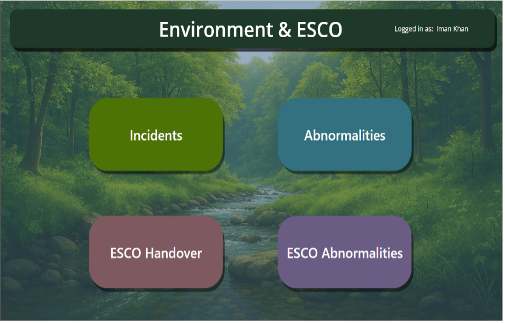

01
Power Platform
Incidents and Abnormalities App
Replaced a macro-dependent process with a Power App, centralised data, Power BI reporting and automated email alerts.
- Problem
- High administration effort, weak visibility and no real-time updates.
- Approach
- Gathered user feedback throughout development and adapted the workflow around operational needs.
- Outcome
- Faster escalation, clearer weekly insights and 8.5 hours saved each month.